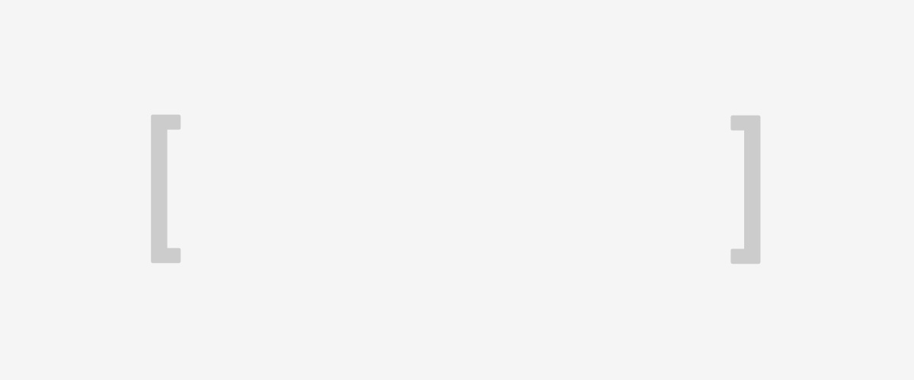
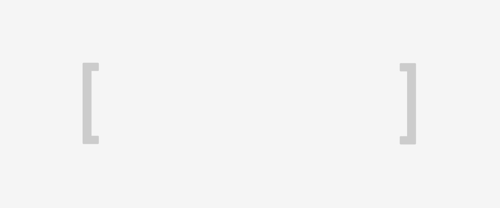

HOME > 지속경영 > 안전보건/환경경영
안전보건/환경경영
안전보건 경영방침
 

포스코엠텍은 함께 일하는 모든 사람의 '안전'과 '보건'을
회사경영의 최우선 가치로 인식하고
전 임직원과 이해관계자 모두가 아래 사항을 적극 실천한다.
- ⟹ 경영자는 안전보건문화 정착 의지를 지속적으로 표명하고 솔선수범한다.
- ⟹ 안전보건 목표와 가치는 경영층, 직원, 협력회사 및 근로자에게 상시 공유한다.
- ⟹ 모든 임직원에게 안전보건활동을 주요 책임으로 부여하며 적절한 교육훈련을 실시한다.
- ⟹ 사업장의 모든 수행단게에서 안전하고 건강한 작업환경을 확보한다.
- ⟹ 안전보건 관련 법규와 회사규정을 명확히 인지하고 철저히 준수한다.
- ⟹ 안전보건 Risk를 사전에 파악하여 개선 조치하고 업무 프로세스를 지속적으로 점검 및 개선한다.
- ⟹ 근로자가 안전보건에 대해 건의 및 협의할 수 있도록 내부 의사소통 체계를 확립한다.
환경 경영방침
포스코엠텍은 '환경'을 경영전략의 핵심 요소로 인식하고
기술개발 및 열린 소통을 기반으로 환경건전성을 확보하고
사회적 책임을 준수하기 위해 다음 사항을 적극 실천한다.
- ⟹ ISO14001을 기반으로 환경경영 체계를 구축하여 글로벌 리더십을 확보한다.
- ⟹ 환경 법규를 준수하고 전 과정을 고려하여 환경을 지속적으로 개선한다.
- ⟹ 청정 생산공정 도입과 최적방지기술 적용으로 오염물질 배출을 최소화한다.
- ⟹ 천연자원, 부산물을 효율적으로 활용하여 자원순환형 사회를 구축하고 생태효율성을 향상한다.
- ⟹ 청정에너지 사용과 녹색기술 적용으로 온실가스 배출을 줄여 저탄소 녹색성장을 선도한다.
- ⟹ 환경경영의 성과를 공개하여 경영의 투명성을 확보하고 지속가능성을 지향한다.